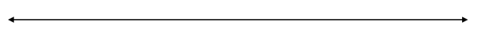
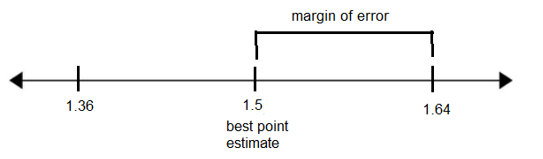

3.6 Confidence Intervals for Means
When constructing a confidence interval, we use data from a sample to estimate information about the population. For a population mean, we use the student-t distribution to construct the confidence interval because we do not know the standard deviation of the population. (If we know the standard deviation of the population, then we use the normal distribution and z-scores instead.) Requirements include a random sample and a normally distributed population or sample size greater than 30.
- Randomly selected statistics students participated in an experiment to test their ability to determine when 60 seconds had passed. The statistics students were not allowed to look at a clock or timer. Forty students yielded a sample mean of 58.3 seconds and a sample standard deviation of 8.4 seconds.
- What is the population of the study?
All statistics students
- What is the sample for the study?
40 statistics students
- What is the best point estimate of the mean time for all statistics students to determine when 60 seconds had passed?
58.3 seconds
- Using the formula, find the margin of error in the study at the 95% confidence level.
\(E=t_\frac\alpha2\ast\frac s{\sqrt n}\\\) and \(df=n-1\)
\(E=2.0227\ast\frac{8.4}{\sqrt{40}}=2.7\\\) seconds
- Use the sample data to construct a 90% confidence interval estimate of mean time for all statistics students. What are the lower and upper limits of the confidence interval?
58.3 – 2.7 = 55.6 seconds and 58.3 + 2.7 = 61.0 seconds
- Graph the confidence interval on a number line and label the best point estimate and the margin of error.

- Write the confidence interval using interval notation.
(55.6, 61.0)
- Write the confidence interval in the form \(\bar{x}\pm E\).
58.3 ± 2.7
- Write the confidence interval using inequality notation.
55.6 < µ < 61.0
- What does the confidence interval tell us? Complete this sentence: “We are 90% confident that
the true mean time for statistics students who estimate when one minute has passed is between 55.6 and 61.0 seconds."
- Based on the results, is it likely that statistics students can estimate the time for a minute reasonably close to 60 seconds on average? How do you know?
Yes, because 60 seconds is within the confidence interval between 55.6 and 61 seconds.
Note: Use the T calculator to find the critical value t-score used in the formula.
For 95% confidence with df = 39, the critical value \(t_\frac{\alpha}{2} = 2.0227\)
- What is the population of the study?
- A hospital is trying to cut down on emergency room wait times. It is interested in the amount of time patients must wait before being called back to be examined. An investigation committee randomly surveyed 70 patients and asked them how long they waited in the lobby of the emergency room. The sample mean was 1.5 hours with a sample standard deviation of 0.5 hours.
- What is the population of the study?
All emergency room patients at this hospital - What is the sample in the study?
70 emergency room patients at this hospital - What is the best point estimate for the mean time that all emergency room patients had to wait?
1.5 hours - Use StatCrunch to construct a 98% confidence interval estimate for the population mean time spent waiting. What are the lower and upper limits of the confidence interval?
1.36 hours and 1.64 hours
- Write the confidence interval using interval notation.
(1.36, 1.64)
- Graph the confidence interval on a number line and label the best point estimate and the margin of error.

- What is the margin of error for this confidence interval?
1.64 – 1.5 = 0.14 hours
- Write the confidence interval in the form \(\bar{x}\pm E\).
1.5 ± 0.14
- What does the confidence interval tell us? Complete this sentence: “We are 98% confident that
the true mean wait time for all emergency room patients at this hospital is between 1.36 and 1.64 hours."
- Is it likely that the average wait time in the emergency room at this hospital exceeds 2 hours? How do you know?
No, because the upper limit of the confidence interval for the true mean wait time is 1.64 hours which is less than 2 hours.
- What is the population of the study?
- Fifty randomly selected Americans were surveyed to determine their average screen time each day. It was revealed that they looked at a screen an average of 7 hours per day with a standard deviation of 1.8 hours.
- Construct a 90% confidence interval estimate for the mean screen time per day of all Americans.
(6.6, 7.4) - Calculate the margin of error. (Draw a graph to help find this.)
7.4 – 7 = 0.4 hours
- Complete the statement: “We are 90% confident that
the true average amount of screen time for Americans is between 6.6 and 7.4 hours per day."
- Is it possible for an American in the study to have reported only 1 hour of screen time per day?
It is possible, since there might have been another American in the study who reported a lot of screen time per day, such as 13 hours, and we are looking at the average.
- Construct a 90% confidence interval estimate for the mean screen time per day of all Americans.
- You conduct a study of hypnotherapy to determine its effectiveness in increasing the number of hours of sleep subjects get each night. You measure hours of sleep for 12 subjects with the following results.
8.2
9.1
7.7
8.6
6.9
11.2
10.1
9.9
8.9
9.2
7.5
10.5
- Construct a 95% confidence interval for the mean sleep time for all hypnotherapy subjects. Assume sleep time is normally distributed.
(8.1, 9.8)
- What is the sample mean?
8.98 hours
- What is the margin of error?
9.8 – 8.98 = 0.82 hours
- Graph the confidence interval on a number line and label the best point estimate and the margin of error.
- Based on this data, does it appear as though the mean sleep time for hypnotherapy patients could be 9 hours? How do you know?
Yes, because 9 hours is within the confidence interval between 8.1 and 9.8 hours.
- Construct a 95% confidence interval for the mean sleep time for all hypnotherapy subjects. Assume sleep time is normally distributed.